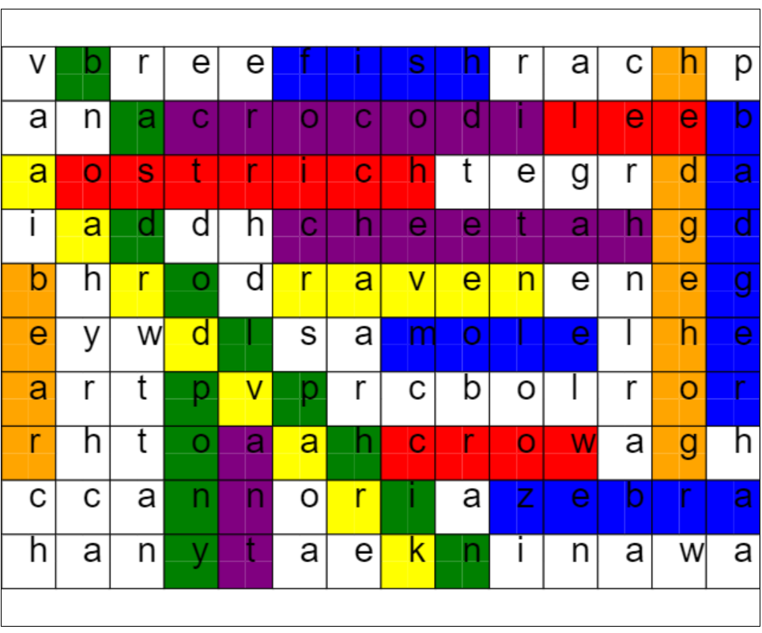

Solar Electric Vehicle Team (SEVT)

Co-leading the Electrical Engineering subteam of SEVT, a student-run group that designs, builds, and races a solar-powered vehicle every 2 years at the American Solar Challenge
Computation Structures - Operating System Design

Coded in C and Assembly to implement the following features of
a [limited] operating system:
Context switching between processes by accessing registers
Switching between user and kernel mode
Addressing exceptions using a trap handler
Conversions between virtual and physical memory
Syscalls
Computation Structures - Processor Design

Coded in Hardware Description Language (HDL) to design a RISC-V Central Processing Unit (CPU) with:
Arithmetic Logic Unit (ALU) for executing mathematical operations on numbers using boolean logic gates (AND, OR, NOT, XOR)
A four stage pipeline to optimize throughput
Data and instruction caches with stall behavior while accessing memory
Bypassing across pipeline stages to prevent unnecessary stalling
Fundamentals of Programming - LISP Intepreter
eBay Software Engineering Intern
Co-leading the Electrical Engineering subteam of SEVT, a student-run group that designs, builds, and races a solar-powered vehicle every 2 years at the American Solar Challenge
Word Search Solver
Designed a web app, including an automated test suite, grammar, parser, and abstract data types to take word search puzzles from the user and solve them graphically